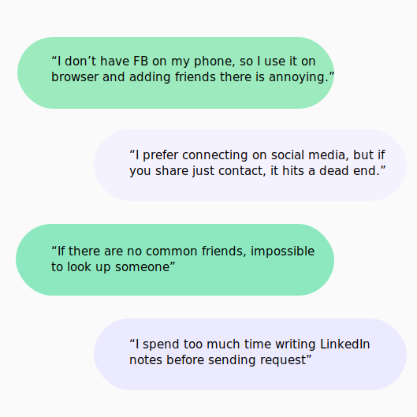
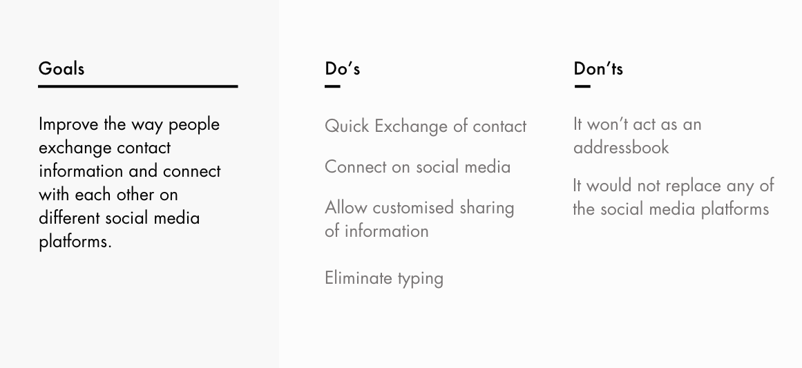

Product Design | Aug'19-Present
Charles Chung, Kenneth, Whyndham, Phalguna and Pragati
Problem
How can we help people connect with each other during business events, networking events and social gatherings like parties etc?
Hypothesis
Once in a while exchange of contact or connecting with someone, might not seem like an issue, but in case of social gatherings meant for networking where people meet new people, the number of social media choices can cause decision lag, distraction and hassle. We conducted primary and secondary research to test our hypothesis before setting out to design.
Research Question
How might we improve the experience of sharing contact information between two people during casual and professional meetups?
Our Approach
My Role
Being the only designer in the team, I lead the research and design of application. The research work included interviews, competitive study and affinity mapping which was done collaboratively. After the research phase, I designed the wireframes, conducted feedback sessions and designed multiple mid-fidelity prototypes.
Comparative Analysis
We started with competitive analysis and studied the existing platforms and how they make the exchange of contact information easier. Although these apps catered only to their services, the study help us understand their approach and identify problems and oppprotunities. We also studied apps which tried to cater to all the platforms together and emphaised on easier exchange. Most applicatons of this kind ere business card focused and lacked any user centered apparoach in their solution.
User Interviews
We interviewed 9 users between the age of 22-29, most of the were students and new in the city looking to network for jobs, dating apart from one who had recently graduated were
Affinity Mapping & Storyboard
Once we had completed our interviews and comparative and competitive analysis we synthesised our results through affinity mapping and storyboarding the current journey of the user.
Personas
Borrowing affinity mapping and having explored scenarios via storyboarding, we decided the core functionalities that we wanted.
Brainstorming & Conceptualisation
Our team sat together and we decided to brainstorm ideas at this stage without thinking about feasbility. The biggest hurdle for the other team members was not thinking about solution and concentrating on the problem and let the research inform the solution. We were successful in coming up with three approaches and showed them with the help of user journey for comparision.
Functionalities
Based on the stories we decided the core tasks that our solution will allow users ro complete.
VOICE ASSISTANT
LOCATION BASED DISCOVRABLITY
QR BASED CONTACT SCANNING
Wireframes
We quickly as a team drew the wireframes and discussed the flow of the application and features to be included.
User feedback & Refinded goals
We had following goals when we set out to get user feedback.
General emotional response to the solution
Are people comfortable with this method of sharing contact information?
Does this solution reduce the time and cognitive load ?
What are the possible gaps between our design and user’s mental model?
Some users had concern with the privacy and they wanted to know if they can disconnect the app from their social media. We found that users struggled with understanding the flow first and they did not know what new connect meant. Dsicoverability button was confusing, and did not convey conneting or sharing conatct information. We came up with following refined goals for the next round of iteration.
Hi-fi Prototype
For the first iteration I focused on designing teh core features and flows of the application so that we could test if the design is simplifying the process or not. I used Adobe XD to make make the hi-fidelity prototype.
User Testing Process
I and Kenneth conducted cognitive walkthrough with 8 users with different goals of networking. We introduced our goal and the concept, and described the activity to help them ease up. We then described the scenario, and let users use the app. while thinking aloud. As they completed every task we asked them to reflect back on the task and fill up a questionnaire.
Feedback & Design Interation
We conducted cognitive walkthrough to test our first iteration of the hi-fidelity prototype and found that
users thought they had to click on yellow notification to activate discovery. The notification feature wasn't clear,
users wanted to be able to choose the social media platform they wanted to share,
some users found the profile interafce overwhelming.
Final Prototype
I am currently working on incorporating the feedback from the last session and exploring the visual design of the app.
Lessons Learned
Storyboarding any journey either existing situation or the solution can bring up very important subtle issues that one might not imagine. In this project we drew a lot of stories for different settings and contexts to help the team empathise with different user personas. The story boarding was also necessary to have the entire team on the same page especially when we had 3 developers and two deisgners.